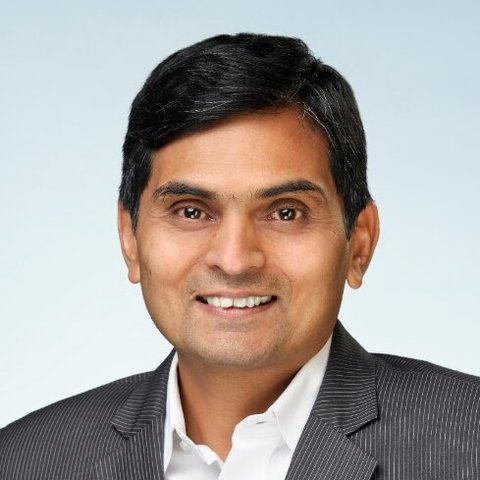

Responsible AI on clean data
Models are only as good as the data under them. My work is trade data standards, data quality and governance that let banks trust what their AI produces.
AI and data leader · meditation teacher
I build AI for global finance.
I teach people to meditate.
Two decades in financial data and risk, now in the AI Hub at BNY. I learned SKY Breath Meditation thirty years ago and have taught Art of Living programs since 2006. I work where those meet: calmer minds building better AI, and AI carrying these practices to more people.
Press start, then follow the dot.
As AI makes thinking cheap, attention becomes the scarce skill. I spend my days on the first and my mornings on the second, and I write and speak about both.
Models are only as good as the data under them. My work is trade data standards, data quality and governance that let banks trust what their AI produces.
I build AI tools that help volunteers and teachers share meditation, with grounded facts, privacy and a human in the loop.
Engineers, quants and leaders carry heavy cognitive load. I teach breathwork and meditation inside banks and in my community, as practical tools for focus and sleep.
AI and data
Now
Senior Director and Fellow, AI Hub, BNY, New York, since April 2026. Before that, nearly ten years as Director of Data Strategy and Architecture at RBC Capital Markets, where I defined a common trade data standard and led data strategy for analytics and regulatory reporting. In my last two years there I began building AI tools on that foundation, including the CDM Navigator below.
FINOS Open Source in Finance Forum · 2025
An assistant that finds paths and definitions in the ISDA Common Domain Model, the open standard for how trades are represented across their lifecycle. Presented with Veera Raghavan at FINOS's Open Source in Finance Forum, New York, 2025. Built with Python and an LLM API: small automations stacked together to solve a big problem.
AI for wellbeing · volunteer work
In my own time I build AI applications that help volunteers and teachers share meditation with more people. They follow the guardrails a wellbeing organization needs: facts grounded in approved sources, privacy by default, and a person reviewing anything that goes out.

Meditation and breathwork
I learned SKY Breath Meditation as an undergraduate at IIT Bombay about thirty years ago. It changed my sleep, my energy and how I handle pressure, and it has stayed part of my life ever since. Since 2006 I have taught with the Art of Living Foundation, inspired by Gurudev Sri Sri Ravi Shankar.
I completed the 300-hour Advanced Yoga Teacher Training at the Sri Sri School of Yoga, and I run wellness and meditation seminars for teams inside banks.
Speaking
Shravan Bharathulwar is an AI and data leader in global finance, currently Senior Director and Fellow in the AI Hub at BNY, after nearly ten years leading data strategy at RBC Capital Markets. An IIT Bombay and Carnegie Mellon alum, Shravan learned SKY Breath Meditation thirty years ago, has taught Art of Living programs since 2006, and builds AI tools that help a worldwide meditation community reach more people.
For talks, workshops or collaborations, message me on LinkedIn or email shravan@alumni.cmu.edu. For courses and private sessions, see Bharathula Wellness.